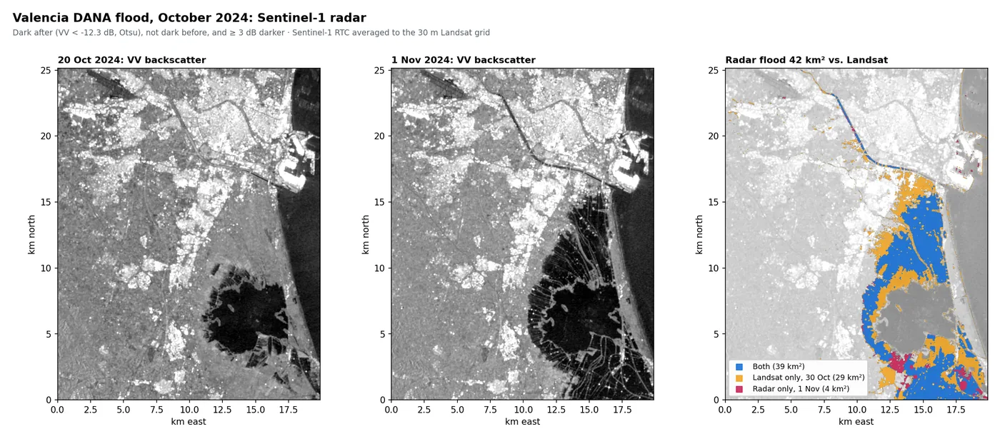
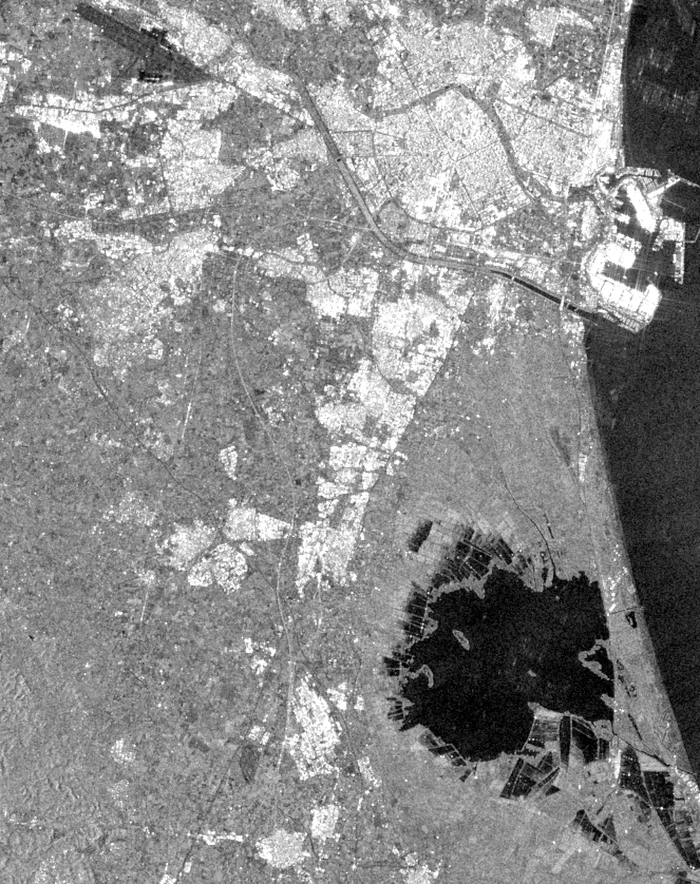
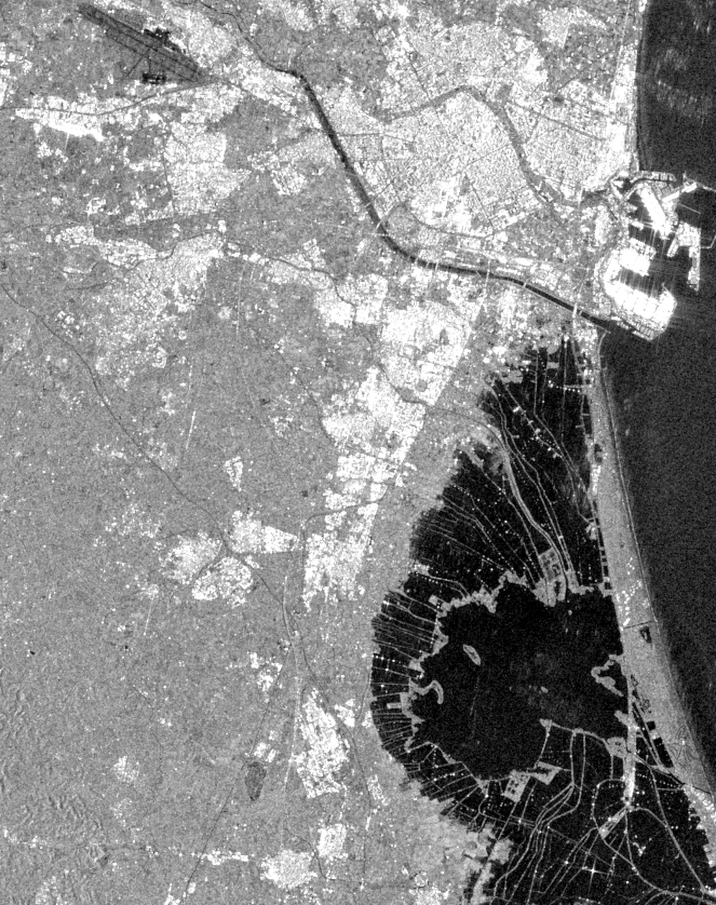
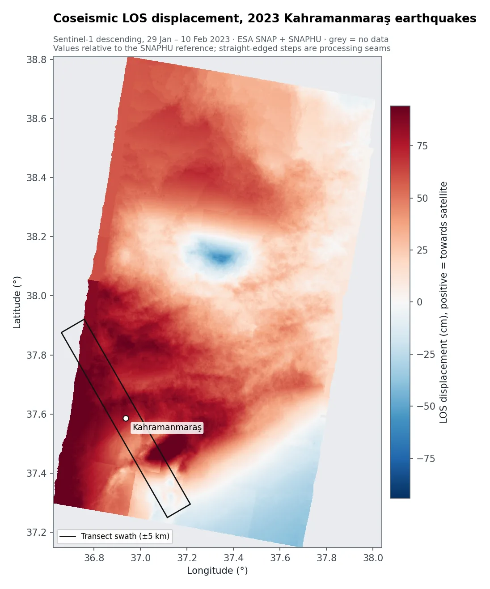
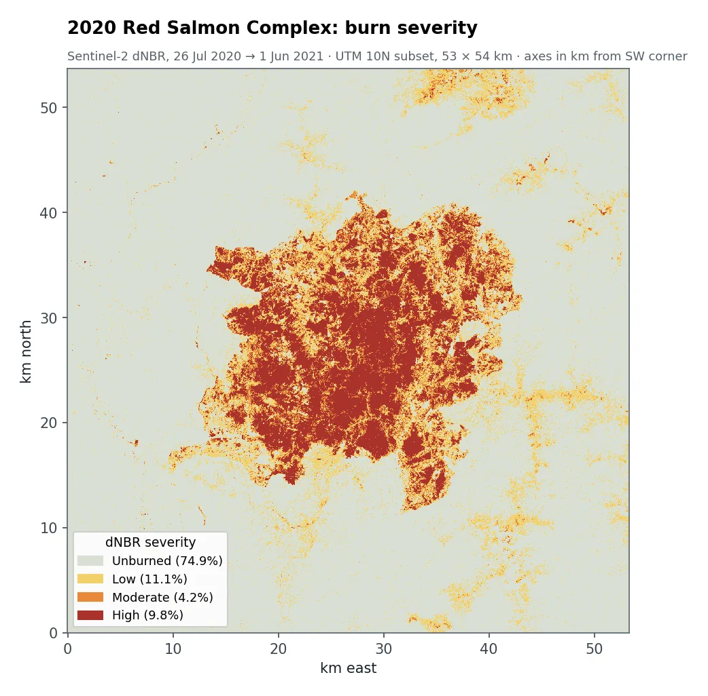
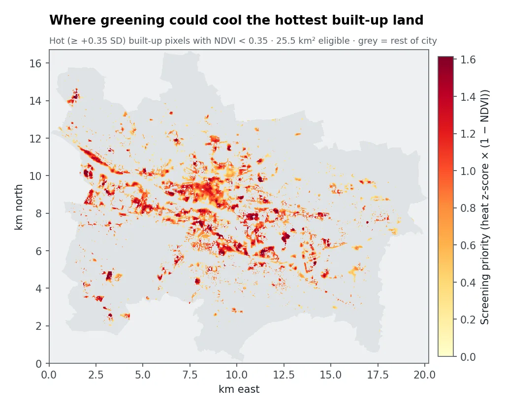
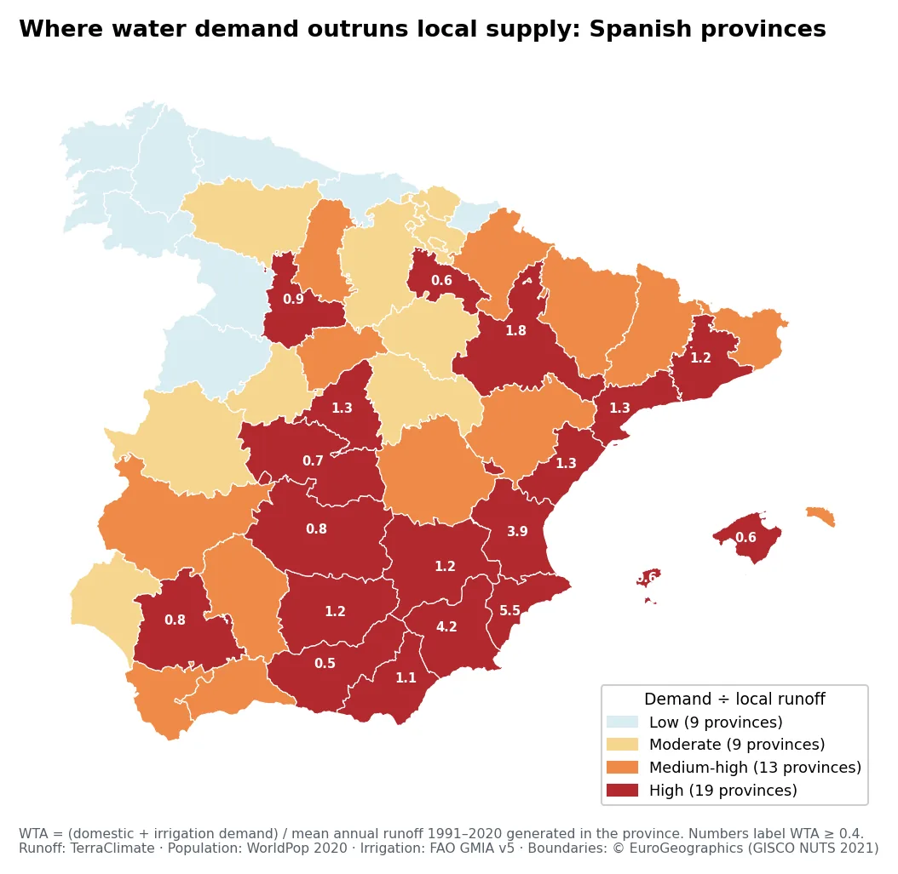
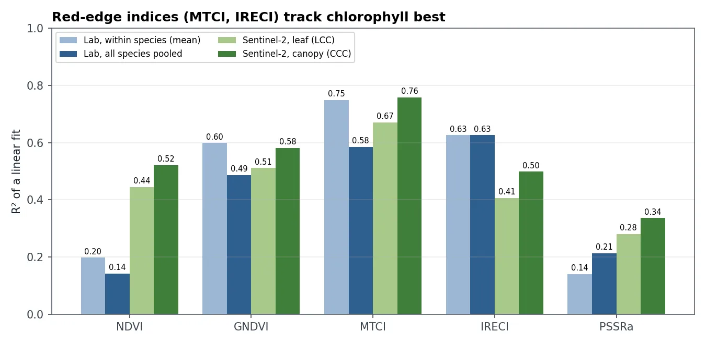
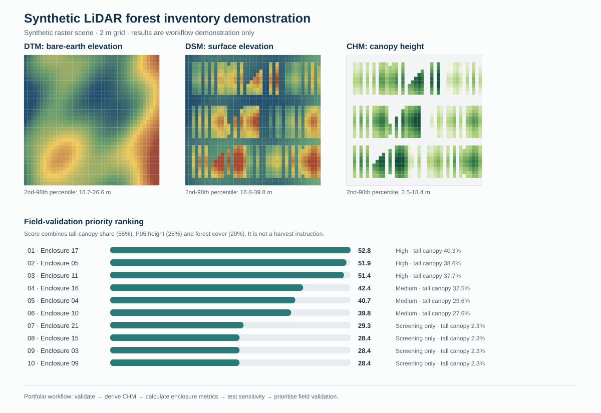

Flood mapping · Spain · 2024
Valencia DANA flood
Landsat found 67 km² of standing water the day after. Radar shows 42 km² still flooded on 1 Nov and 14 km² on 6 Nov, and a brighter signal over the worst-hit towns.
Remote sensing & GIS analysis · United Kingdom
I map floods, measure ground movement, estimate forest carbon and find urban hot spots using radar, LiDAR and optical satellite imagery. Every result comes with maps, ready-to-use data and a short plain-language report on what it can and can't support.


20 Oct 1 NovFocused analysis projects: one clear question, one area, delivered in weeks. I work with open satellite data and open-source tools, so you can rerun and update the results yourself later.
Flood extent from Sentinel-1 radar and Landsat/Sentinel-2, affected buildings and roads, and how fast the water recedes. Radar sees through cloud, so maps are possible even when the sky stays overcast after a storm.
GeoTIFF · GeoPackage · map sheets · report
Centimetre-scale ground movement from Sentinel-1 interferometry for earthquakes, subsidence and infrastructure corridors, with profiles, statistics and a clear account of uncertainty.
ESA SNAP · SNAPHU · Python
Canopy height from LiDAR, burn severity and above-ground carbon loss with sensitivity analysis, and which vegetation indices really track chlorophyll and crop vigour.
Sentinel-2 · airborne LiDAR · field data
Land-surface temperature from Landsat thermal data, the hottest neighbourhoods with the least greenery, and how much cooling extra vegetation could bring.
Landsat 8/9 TIRS · NDVI · land cover
Site screening, water-stress analysis, and moving ArcGIS/arcpy workflows to open-source Python with the same results and no licence fees.
GeoPandas · rasterio · QGIS · ArcGIS Pro
Each case is a public GitHub repository with code, tests and results that anyone can rerun. Figures come from real satellite data unless marked as a demo.

Flood mapping · Spain · 2024
Landsat found 67 km² of standing water the day after. Radar shows 42 km² still flooded on 1 Nov and 14 km² on 6 Nov, and a brighter signal over the worst-hit towns.

InSAR · Türkiye & Morocco · 2023
About 74 cm of line-of-sight change across 10 km south-east of Kahramanmaraş, and up to 15 cm of motion towards the satellite after the Al Haouz earthquake in Morocco.

Forest carbon · California · 2020
About 6.8 million tonnes of carbon lost in the Red Salmon Complex fire. High-severity burning covers 10% of the area but causes 58% of the loss. Sensitivity runs give −17% to +46%.

Urban heat · Glasgow, UK · 2019
Built-up land is 4.6 °C hotter than grassland at the surface. Each +0.1 NDVI goes with about 0.9 °C of cooling, and 25.5 km² of hot, bare built-up land is flagged first.

Water resources · Spain
Spain needs about 24% of its locally generated runoff. 19 of 50 provinces, home to two-thirds of the population, are under high stress. Alicante needs 5.5× its own runoff.

Site screening · Hampshire, UK
Within 5 km of a motorway and below 75 dB of road noise: 92.7 km² in the New Forest and 120.7 km² in the South Downs. The open-source rewrite matches the original ArcGIS output.

Vegetation health · lab & field
The red-edge index MTCI explains about 75% of chlorophyll variation, and 76% at canopy scale. The familiar NDVI manages about 0.2, which is unreliable.

LiDAR · New Forest, UK
Canopy height from DSM and DTM, stand metrics, and a transparent ranking of which compartments most need field checks, tested against vertical error.
Method demo with synthetic data, not field measurements.
Three working tools built on real project data. Each one shows a judgement call inside an analysis, and how much that call changes the answer.
Tool A · Valencia radar, 1 Nov 2024
Water looks dark to radar. A pixel counts as flooded (blue) when it's darker than the threshold and has darkened enough since before the flood. Move the sliders and watch the area and building count change.
How I handle it: pick the threshold from the data itself (Otsu's method), then report how the result moves when it changes, rather than a single number.
Tool B · Morocco earthquake 2023, Sentinel-1
The satellite records repeating colour fringes, each one 2.8 cm of movement. Unwrapping turns them into a continuous displacement map. Press and drag across the map to draw a line; its displacement profile appears below.
The square marks the USGS epicentre. Unreliable pixels (coherence below 0.3) are masked in dark grey.
Tool C · Glasgow, Landsat 8, 28 June 2019
Cyan marks the hottest built-up land with little vegetation. Choose how much of it to target and how much greener it gets, and see the area and the expected surface cooling.
Cooling uses the city-wide relationship between NDVI and surface temperature (about 8.7 °C per unit NDVI). It's a screening estimate: surface temperature isn't air temperature, and it isn't a forecast for any one site.
Every project follows these five steps. How long it takes depends on the area and the data.
What decision the work supports, the area and dates, and what accuracy is good enough.
Free satellite archives first, checked for cloud, coverage and licence terms.
Documented, reproducible code you can rerun at any time.
Uncertainty ranges and cross-checks against reference data or a second sensor.
Maps, GIS layers and a short report stating the findings, the limits and next steps.
I'm Xiaoqiao (Evelyn) Liu, a remote sensing and GIS analyst with an MSc in Applied GIS and Remote Sensing from the University of Southampton and a BSc in Remote Sensing Science and Technology from China University of Geosciences (Wuhan).
At the Hainan Aerospace Technology Innovation Center I processed two decades of multi-sensor satellite data (Sentinel-1, Envisat, ALOS PALSAR, MODIS, VIIRS) on internal waves and eddies in the South China Sea, and built a batch Sentinel-1 processing chain in SNAP and MATLAB.
I work to three rules: results you can reproduce, every number with its uncertainty, and a plain statement of what the result must not be used for.
Send me the area, the dates and the decision you need to make. I'll reply with whether it's feasible and an outline approach.